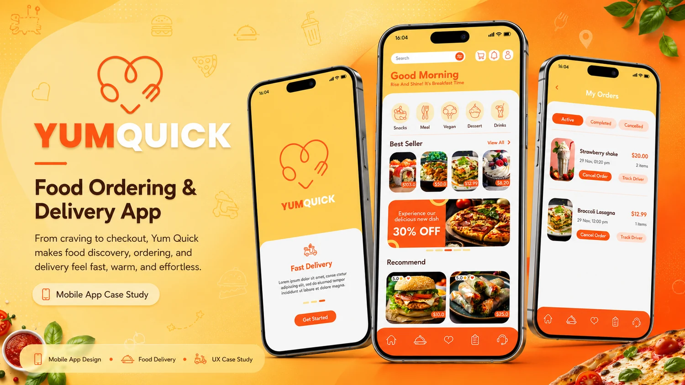

Mobile UI Systems
Polished screens, reusable components, and clear visual hierarchy for mobile-first products.
FlutterFlow • Mobile UI/UX • Firebase • Supabase
I help founders and businesses turn app ideas into clear, trustworthy product experiences. Every case study is built to show strong UI quality, user-flow thinking, and realistic 3D presentation that clients can understand fast.

Capabilities
Design samples, product flows, and build-ready structures that show how I approach real digital products, not just pretty screens.
Polished screens, reusable components, and clear visual hierarchy for mobile-first products.
Database-connected screens, auth flows, actions, custom logic, and app-ready workflows.
Firebase or Supabase setup for real data, storage, user accounts, and scalable app behavior.
Hero frames, thumbnails, and 3D mockups that communicate product value clearly.
Selected work
Explore mobile app presentations across healthcare, fintech, food delivery, real estate, and productivity. Each project is structured around clear user flows, brand fit, premium UI, and conversion-ready visuals.
Services
Strategic design and development support for founders, startups, and businesses that need polished product experiences clients can trust.
High-fidelity mobile screens, user flows, design systems, and product-ready app visuals that make your idea feel credible.
Functional mobile or web app builds with screens, authentication, logic, databases, and integration-ready structure.
Improve an existing app’s layout, spacing, hierarchy, user journey, and overall visual quality so it feels more premium.
Turn app screens into premium portfolio visuals, thumbnails, and case study frames that communicate value instantly.
Process
A structured, collaborative approach that keeps the build focused, the design premium, and the final result easy for clients or users to understand.
Clarify the niche, user needs, core feature flow, business goal, and product direction.
Map the screens, user journey, app architecture, database needs, and project scope.
Create polished UI screens, visual systems, responsive layouts, and product hierarchy.
Develop with FlutterFlow, Firebase, Supabase, APIs, and practical app logic.
Review flows, fix friction points, improve responsiveness, and validate behavior.
Package the app with 3D mockups, case study visuals, and portfolio-ready content.
What clients can expect
Every project is handled with practical structure, consistent updates, and design choices that support real business outcomes.
Modern aesthetics, clean spacing, and premium typography that help your product look trustworthy.
Interfaces are shaped around user goals, not just visual trends or decoration.
Simple updates, transparent progress, and a collaborative working style from start to finish.
About
I focus on mobile app UI/UX, FlutterFlow development, backend setup, and product presentation. My goal is to help founders and businesses move from raw ideas or rough screens to polished apps that feel clear, credible, and ready to show.
Start the conversation
View my Upwork profile to start a project, discuss a similar app, or share what you want to build next.